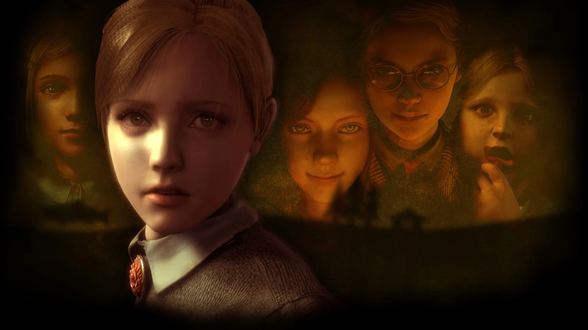

Ce que les jeux
ne disent pas
— ✦ —

La mariée sans visage — ce qu'Hinako ne peut pas regarder
Hinako, Shiromuku, Junko et la poupée : quatre figures pour lire Silent Hill f comme une cartographie de l'identité confisquée dans le Japon des années 1960.
Le mobilier a un cœur — Sayo Yasuda et les masques du féminin
Shannon, Kanon, Beatrice et les femmes Ushiromiya : une lecture féministe de l'archipel doré.
Sans amour, cela ne peut être vu
La magie comme épistémologie de l'empathie — ce qu'Erika Furudo ne verra jamais, et pourquoi.

La règle de la rose — ce que les enfants font aux enfants
Hiérarchies, cruauté, amour impossible et mémoire brisée dans le jeu le plus mal compris de son époque.
Le pays des merveilles ne protège plus
Mémoire, abus et résistance dans Alice : Madness Returns — Wonderland comme carte du trauma.
L'allumette et le loup — lumière, mensonge et identité dans White Night
Le protagoniste est le tueur. Le noir et blanc comme langage narratif dans ce jeu français injustement méconnu.
La poupée qui dit je t'aime — héritage et corruption dans Mad Father
Aya aimait son père. Elle ne savait pas encore ce qu'elle était. La malédiction des deux lignées.
Le brouillard a changé — ce que le remake de Silent Hill 2 dit de nouveau
Stillness, Bliss, et la thèse de la suite secrète — ce que Bloober Team a osé ajouter à l'œuvre de Team Silent.